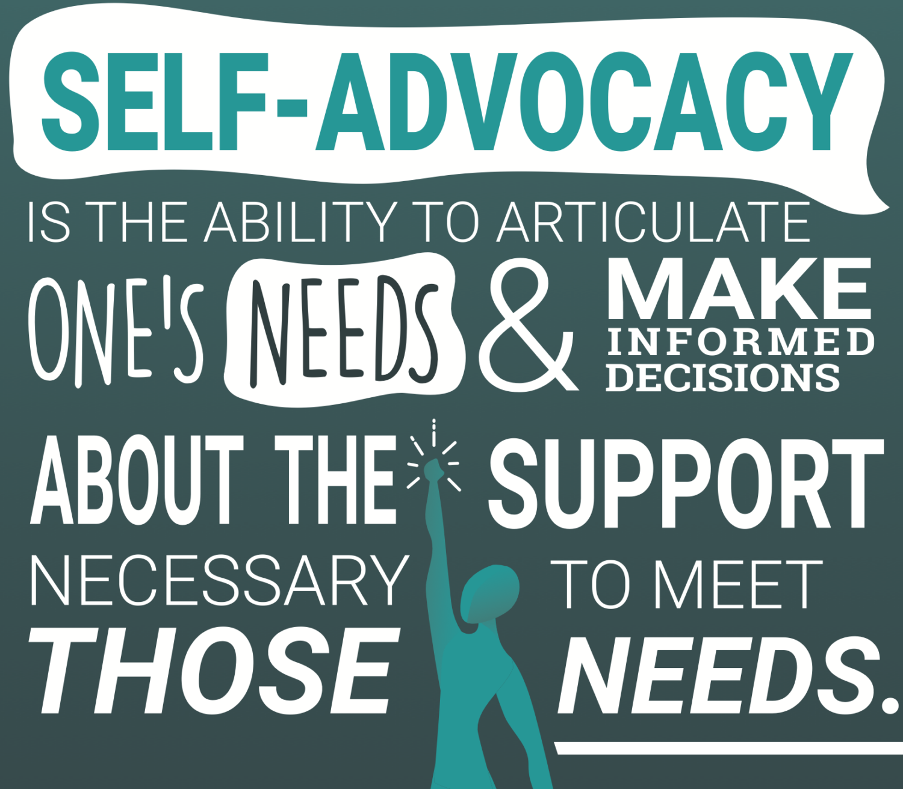

Advocating
Advocacy is the ability to communicate your needs effectively and ensure that your voice is heard. People who can advocate for themselves tend to perform better in all aspects of life. For example speaking up at school or in the workplace. This skill enables you to thrive and find solutions to everyday problems, even if others are unaware that you’re struggling. Having the confidence to ask for what you need will help you succeed in meeting your goals. This skill not only helps you get what you want, but can assist you in saying no when something is not in your best interest.
Advocacy is important because learning how to stand up for yourself is a lifelong skill that will positively impact your future. One of the major benefits of practicing advocacy is that it creates independence. Another great benefit is that it empowers you to find solutions to things you may be struggling with. It's never too late to learn how to advocate for yourself.
The three key elements to self advocacy as stated on understood.org are understanding your needs, knowing what kind of support you need, and lastly, communicating these needs to others.
To develop this skill, start with small steps. Knowing that it may take some time and patience to develop this skill. The goal is to become more aware of your strengths and what is a challenge for you. Do some self reflection and understand the things you struggle with. Once you are aware of your needs, you can communicate this to others. It is important to find the support or tools you may need to advocate for yourself.
